Calibración de equipos de radioterapia externa
Física de la radioterapia. Máster de Física Biomédica
Definición de calibración de una unidad de RT externa
Proceso por el que se establece el cociente \(Gy/UM\) para cada energía del acelerador (haz de fotones, haz de electrones, beamlet de protones) para una geometría de irradiación determinada
Relevancia de la calibración
Es la base para convertir las distribuciones relativas de dosis calculadas por el planificador en distribuciones de dosis absorbida de acuerdo a la prescripción del oncólogo de radioterapia.
El planificador es capaz de relacionar la geometría concreta del tratamiento con la geometría estándar de calibración, y calcula cuántas \(UM\) son necesarias para dar los \(Gy\) de prescripción.
Las \(UM\) son la información que se le da al acelerador para realizar el tratamiento.
Aceleradores lineales en Gantry
Haces de fotones y electrones
Factores que afectan a la dosis medida en un punto
- El medio en que se mide la dosis.
- La profundidad a la que se mide la dosis.
- La distancia desde el foco de radiación al punto de medida.
- El tamaño de campo.
- La posición del punto de medida dentro del haz de radiación.
Medio de medida
- El agua es el medio de referencia utilizado generalmente: fácil de obtener, homogéneo.
- Para minimizar los efectos debidos a la variación de la radiación secundaria que llega al detector, se utiliza un volumen grande (al menos 25x25x25 cm³).
- Se pueden utilizar otros materiales sólidos (plásticos sobre todo), que tengan densidad y número atómico efectivo similar; pero exigen correcciones a la medida para tomar en cuenta esas diferencias, y presentan otros problemas (falta de homogeneidad, polarización eléctrica).
Uso de plásticos
Bajo condiciones de control estadístico los plásticos son muy útiles para comprobar la constancia de la calibración.
Permiten de forma fácil y rápida verificar la calibración e indicar la necesidad de realizar medidas con menor incertidumbre.
Profundidad de medida
Fotones:
- Entre 5 y 10 cm.
- Suficientemente grande para:
- Asegurar equilibrio electrónico.
- Evitar la posible contaminación del haz por electrones.
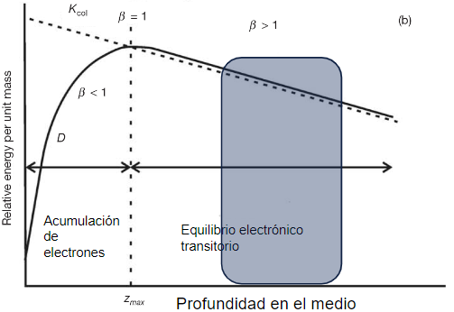
Electrones:
- En la zona entre el máximo de dosis y el comienzo de la caída. 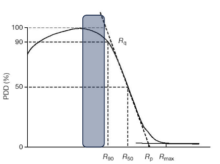
Distancia foco-punto de medida
- Setup isocéntrico: detector colocado en el isocentro.
- Setup distancia fuente superficie constante: normalmente isocentro colocado en la superficie del maniquí de medida.
Tamaño de campo
- Campo estándar de calibración: campo cuadrado de 10 x 10 cm².
Posición del punto de medida
- En el eje central del haz.
Detector para la calibración: Cámara de ionización
- Instrumento lo bastante sencillo como para ser empleado en un entorno clínico.
- Con la precisión suficiente (< 2%).
- Tipo de cámara:
- Cilíndrica para haces de fotones y haces de electrones de energía superior a 6 MeV.
- Plana para haces de electrones de baja energía.
Calibración de la cámara
- Proceso que garantiza la trazabilidad de la medida de dosis hasta un patrón primario de dosis.
- Para alcanzar la precisión requerida, cada cámara debe ser calibrada individualmente (las variaciones de respuesta entre cámaras del mismo modelo pueden llegar al 1%).
- La calibración se realiza en un Laboratorio Dosimétrico Secundario de Referencia, comparando la lectura de la cámara con la lectura de una cámara patrón.
- La cámara patrón se calibra con los patrones de referencia de los Laboratorios Dosimétricos Primarios de Referencia.
- Las cámaras se suelen calibrar en haces de unidades de Cobalto, por la estabilidad de la energía y de la tasa de dosis.
- Hay dos formas de realizar la calibración:
- En aire (con caperuza de equilibrio): se obtiene el factor de calibración de kerma en aire, \(N_k\). Era la más utilizada hasta finales de los años 90.
- En agua: se obtiene el coeficiente de calibración de dosis absorbida en agua, \(N_{D,w}\). Exige utilizar una funda hermética si la cámara no es sumergible. La preferida hoy en día.
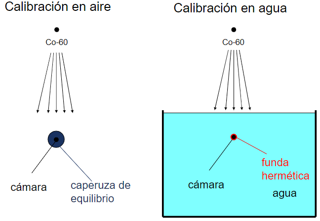
Cálculo de dosis en un haz clínico
Fijada la geometría de la irradiación, y conocido el factor de calibración de la cámara, es necesario dar ciertos pasos para relacionar la lectura de la cámara en la geometría de calibración del haz y la dosis en ese punto producida por el haz de radiación. Dichos pasos quedan establecidos en alguno de los Protocolos definidos a nivel nacional o internacional. El objetivo de esos protocolos es:
- Proporcionar valores de referencia para los distintos factores que aparecen.
- Establecer un marco común para que los distintos centros puedan comparar sus medidas.
Clasificación de los protocolos
- Protocolos basados en la calibración de la cámara de ionización en términos de kerma en aire (TG-21, TRS-277, TRS-381, SEFM-84, etc).
- Protocolos basados en la calibración de la cámara de ionización en términos de dosis absorbida en agua: TG-51, TRS-398, TRS-483.
Protocolos basados en kerma en aire
Paso desde el coeficiente de calibración en kerma a la dosis en agua
El paso desde el coeficiente de calibración en kerma \(N_k\) a la dosis en agua en la calibración clínica se realiza en dos etapas:
- Obtención del factor de calibración de dosis en aire, \(N_{D,\text{aire}}\).
- Obtención del factor de corrección que hay que aplicar para pasar de dosis en aire a dosis en agua.
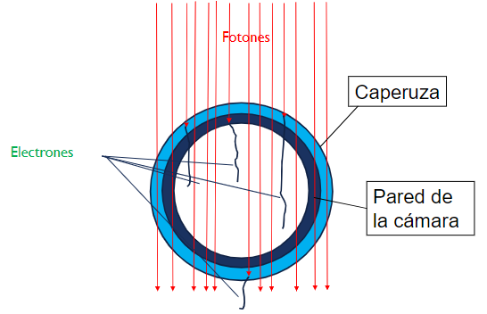
Hay que tener en cuenta que, al calibrar la cámara en aire, la inmensa mayoría de los electrones que atraviesan la cámara no provienen de la interacción de los fotones del haz en el aire que la rodea, sino de la interacción en la caperuza de equilibrio y la pared de la cámara. Por lo tanto, la composición de éstas es un factor fundamental de la calibración.
Factor de calibración de dosis en aire
\[ N_{D,\text{aire}} = N_k (1-g) k_m k_{as} \]
\(g\) es la fracción de energía de los electrones que se reemite en forma de bremsstrahlung.
\(k_m\) es un factor que toma en cuenta la no equivalencia al aire de la caperuza de equilibrio y la pared de la cámara.
\(k_{as}\) es un factor que toma en cuenta la perturbación que produce la cámara sobre la fluencia de fotones del \(^{60}\)Co por atenuación y dispersión de éstos en las paredes de la cámara; es decir, corresponde al cociente entre la fluencia de fotones cuando la cámara no está en el medio y la fluencia cuando sí está. \[ k_{as} = \frac{1}{k_{at}^{\text{Co}} \, k_{sc}^{\text{Co}} \, k_{\text{nounif}}^{\text{Co}}} \]
\(k_{at}^{\text{Co}}\) es la corrección debida a la atenuación de los fotones incidentes en las paredes de la cámara.
\(k_{sc}^{\text{Co}}\) es el aumento de señal de la cámara debido a la dispersión de fotones en las paredes de la cámara.
\(k_{\text{nounif}}^{\text{Co}}\) es un factor que toma en cuenta la no uniformidad del haz primario de radiación dentro del volumen de la cámara. Para una cámara suficientemente alejada de la fuente se puede hacer la aproximación \(k_{\text{nounif}}^{\text{Co}} \approx 1\).
Dosis en la medida del haz clínico
Si \(M\) es la lectura de la cámara en la irradiación del haz clínico, la dosis medida será:
\[ D_{\text{agua}} = M^* \cdot (s_{\text{agua, aire}})_E \cdot N_{D,\text{aire}} \cdot p_f \cdot p_{\text{wall}} \cdot p_d \]
\(M^*\) es la lectura corregida por todos los factores de influencia (ver clase sobre cámaras de ionización):
\[ M^* = (M - \text{fugas}) \cdot k_{tp} \cdot k_{\text{pol}} \cdot k_s \]
\((s_{\text{agua, aire}})_E\) es el cociente de los poderes de frenado másico restringido entre el agua y el aire para la energía del haz que se está calibrando.
Protocolos basados en dosis en agua
Cuando la cámara está sumergida en agua, la mayoría de los electrones secundarios que la atraviesan se han producido en el agua, no en la pared.
Teoría de Bragg-Gray
\[ D_{\text{agua}} = M^*\,N_{D, \text{aire}}\,s_{\text{agua, aire}}\, p_Q \]
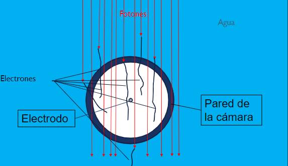
\[ p_Q = p_{\text{cav}} \, p_{\text{wall}} \, p_{\text{dis}} \, p_{\text{cel}} \]
- \(p_{\text{cav}}\): diferencias en la fluencia de electrones producidos por la presencia de la cámara.
- \(p_{\text{wall}}\): electrones secundarios generados en la pared de la cámara que atraviesan ésta.
- \(p_{\text{dis}}\): la fluencia no es homogénea dentro de la cámara, y la medida de la cámara no corresponde a la dosis en su centro sino a un punto situado más hacia la pared de entrada.
- \(p_{\text{cel}}\): efecto del electrodo central en la fluencia de electrones.
Calibración de la cámara en términos de dosis en agua
Ventaja de calibrar en dosis en agua
La cámara se calibra en términos de dosis en agua, que es la misma magnitud que luego se va a medir en el haz clínico.
Si el haz que se calibra tiene la misma energía que la del haz que se usó para calibrar la cámara, tendremos:
\[ D_{\text{agua}} = M^* \cdot N_{D,\text{agua}} \]
\(M^*\) es la lectura corregida por todos los factores de influencia:
\[ M^* = (M - \text{fugas}) \cdot k_{pT} \cdot k_{\text{pol}} \cdot k_s \]
Si el haz es de diferente energía hay que tener en cuenta la variación de los factores de perturbación \[ D_{\text{agua}} = M^* \cdot N_{D,\text{agua}} \cdot K_{QQ_0} = (M - \text{fugas}) \cdot k_{pT} \cdot k_{\text{pol}} \cdot k_s \cdot N_{D,\text{agua}} \cdot K_{QQ_0} \] \[ K_{QQ_0} = \frac{(s_{\text{agua, aire}})_Q\, p_Q}{(s_{\text{agua, aire}})_{\text{Co}}\, p_{\text{Co}}} \]
Factores \(K_{QQ_0}\)
- Los factores \(K_{QQ_0}\) se han calculado o medido para todos los modelos de cámara y para todas las energías que se utilizan en la práctica.
- Las variaciones de estos factores son mínimas para cámaras de un mismo modelo, inferiores al 0.01%.
- Los factores están tabulados en los protocolos internacionales (TRS398, TG-51) en función de la calidad del haz.
Especificación de la calidad del haz
Fotones
- TRS 398
- \(TPR_{20,10}\) para campo 10x10 cm y SAD=100 cm.
- \(PDD_{20,10}\) para campo 10x10 cm y SSD=100 cm.
- \(TPR_{20,10} = 1.2661 \cdot PDD_{10,20} - 0.0595\).
- TG 51
- \(PDD(10\,\text{cm})\) para campo 10x10 cm y SSD=100 cm.
Electrones
- \(R_{50}\).
- Punto de medida:
- \(z_{\text{med}} = 0.6 \cdot R_{50} - 0.1\).
Protonterapia
Haces generados mediante PBS (Pencil Beam Scanning)
Condiciones de medida
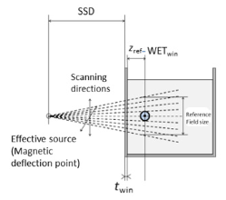
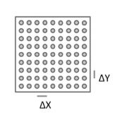
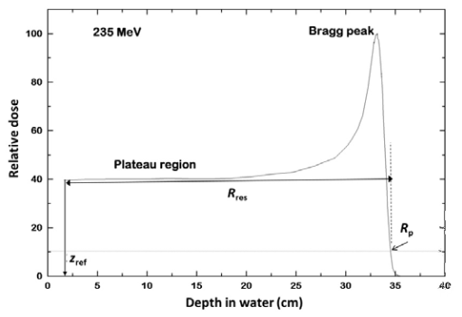
- Cámara de ionización cilíndrica o paralela.
- Haz barrido extenso con una única energía.
- Posición de la cámara: en el plateau, antes del comienzo del pico de Bragg.
- \(R_p\) profundidad más allá del pico de Bragg a la que la dosis desciende al 10% del máximo.
Determinación de la dosis absorbida1
\[ D_{\text{w},Q}(z_{\text{ref}}) = M_Q \cdot N_{D,\text{w},Q} \cdot K_{Q,Q_0} \]
Especificación de la calidad del haz
Mediante el rango residual \(R_{\text{res}}\) (en g/cm²) a una profundidad de medida \(z\)
\[ R_{\text{res}} = R_p - z \]
Aceleradores con geometría no estándar
Haces de fotones
Protocolos específicos (TRS 483)
TRS 398 y TG 51 se aplican a haces de fotones con filtro aplanador y en máquinas capaces de utilizar un campo de 10x10 cm².
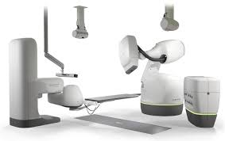 Cyberknife (versiones sin MLC)
Colimación mediante conos de radiocirugía, haz sin filtro
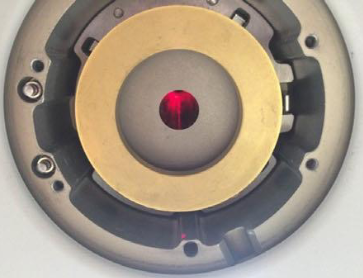
Imagen de la parte externa del colimador de la Cyberknife.
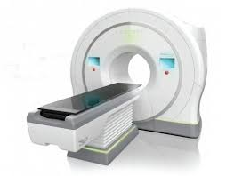 Tomotherapy
Haz sin filtro en forma de abanico, MLC binario sobre la apertura del campo.
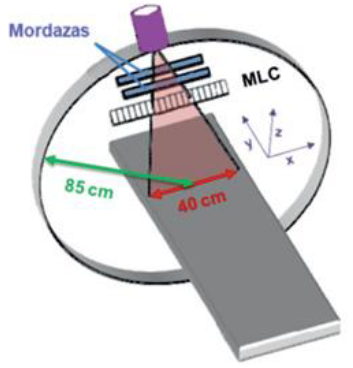
Machine Specific Reference Field (Campo de Referencia Específico de la Máquina)
Geometría de campo estándar para aquellos sistemas que no pueden colimar al campo de referencia.
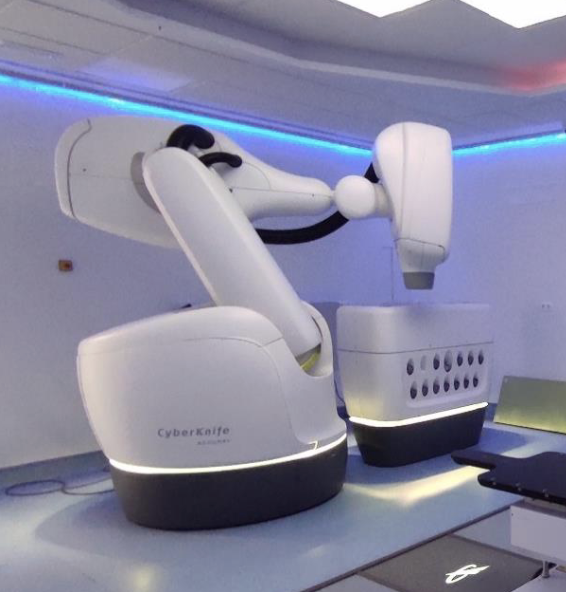
Cyberknife
- Campo de referencia específico: Colimador de 6 cm de diámetro
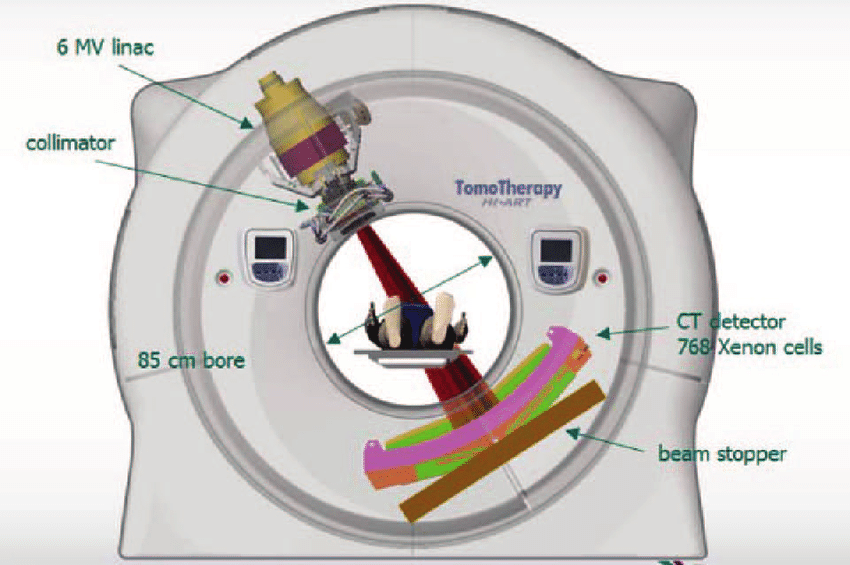
Tomotherapy
- Campo de referencia específico: 5 x 10 cm²
Especificación de la calidad del haz
- La ausencia del filtro implica menor proporción de radiación dispersa y por tanto, distinta relación entre calidad del haz y \(TPR_{20,10}\).
- Se proponen nuevas tablas que relacionan \(k_{Q,Q0}\) con \(TPR_{20,10}\) en haces FFF.
- Estos valores incluyen \(k_{vol}\).
Dosis de calibración para el MSRF
\[ D_{w,Q_{msr}}^{\text{MSRF}} = M^* \cdot N_{D,w,Co}^{\text{MSRF}} \cdot k_{Q,Co}^{\text{MSRF}} \]
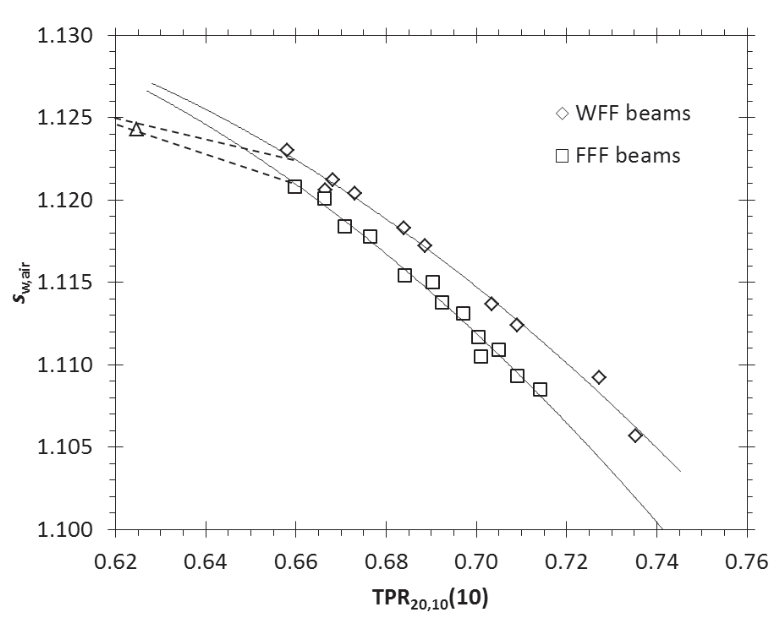
Para obtener \(k_{Q,Co}^{\text{MSRF}}\) hay que estimar \(TPR_{20,10}(10)\). Se emplea una aproximación empírica
\[ TPR_{20,10}(10) = \frac{TPR_{20,10}(S) + c \cdot (10 - S)}{1 + c \cdot (10 - S)} \]
donde \(c = 16.15 \times 10^{-3}\) y \(S\) el lado de un campo cuadrado equivalente al MSRF

Calibración de equipos RT externa. Física de la radioterapia